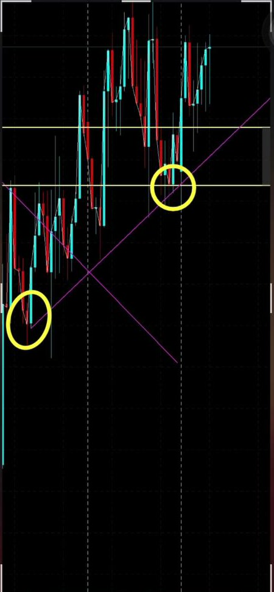
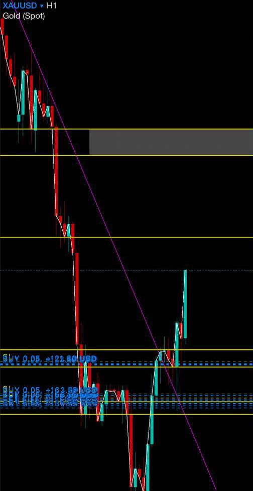
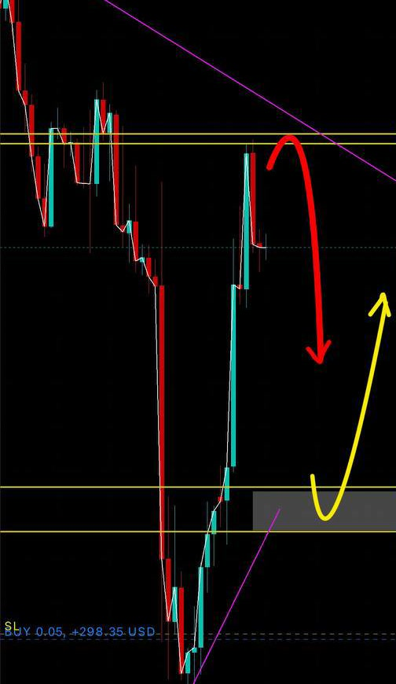

Direction before reaction.
Direction identified



One direction. One plan.
Follow it to target or invalidation. That is the whole system.
Join the channelYou're not a bad trader. You're trading without direction.
Join the channel25,962 members · free to join, no forms



Follow it to target or invalidation. That is the whole system.
Join the channel